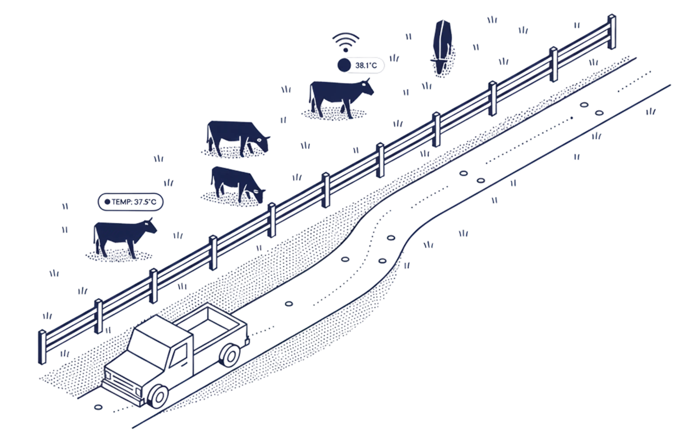
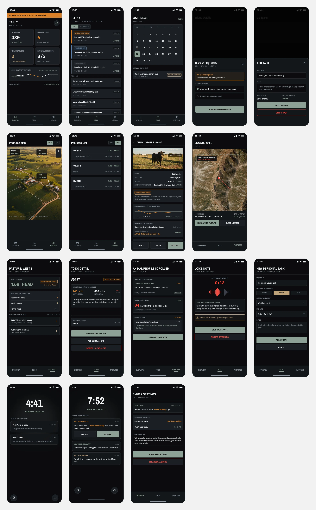
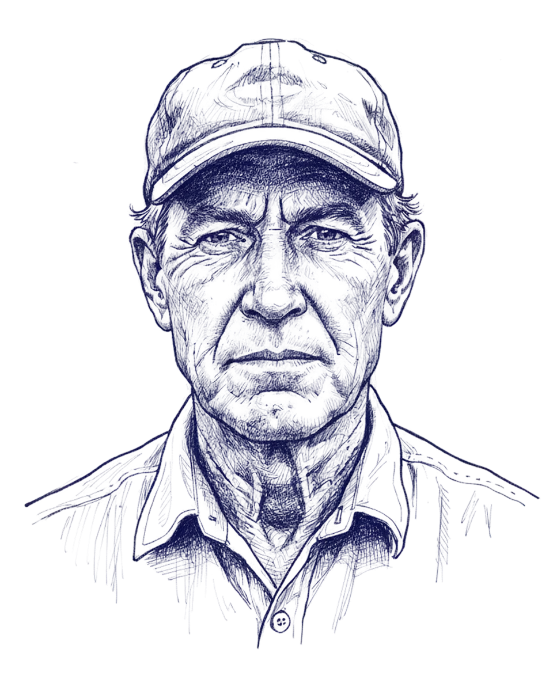
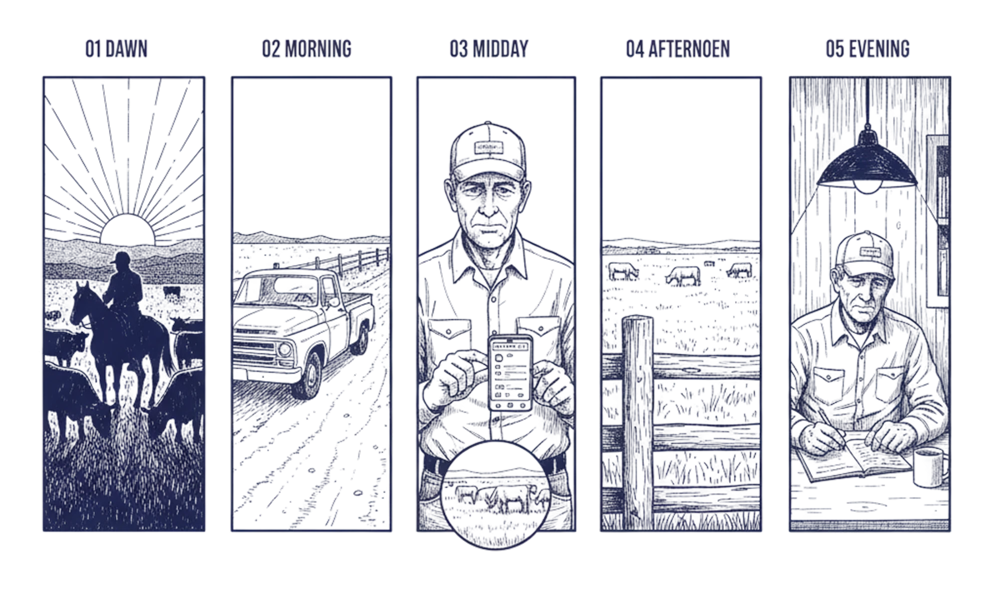
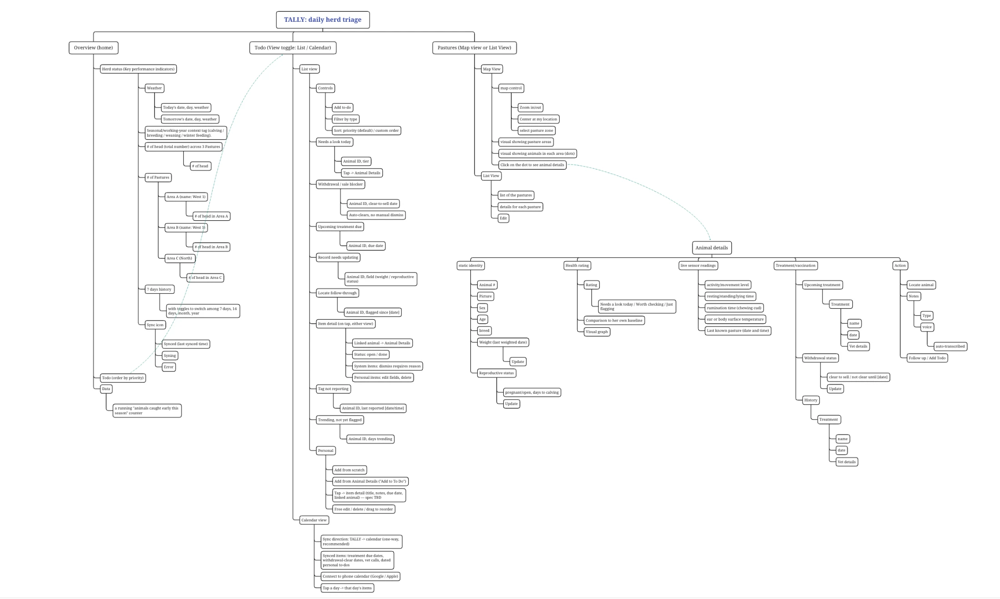
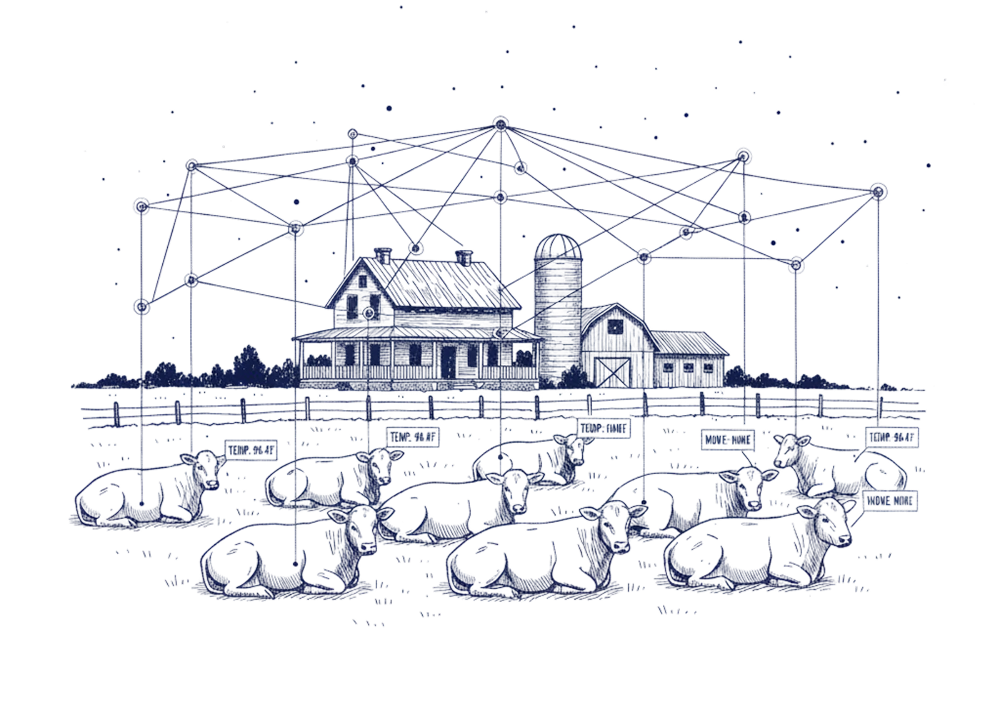

TALLY tells a rancher which animals need his attention today, why, and how confident the system is.
Every morning it turns an overnight read of the whole herd into a short, ranked list, so he knows where to walk first instead of guessing. He can check it with one gloved hand in under thirty seconds, even standing in a pasture with no signal, and whatever he finds when he gets there becomes part of the record for tomorrow's list.
I set out to design for real trust, real confidence, and honest error-handling — for someone making high-stakes calls about his own animals every day, often with a gloved hand and no signal to fall back on.
Every decision in this case study was made to earn that trust, not just to look trustworthy.


Dale can pick the one wrong animal out of a hundred and forty from a moving truck, and he has been doing it since he was nineteen. What slows him down isn't his eye for a sick animal — it's that he can only be in one pasture at a time, and by Thursday he no longer remembers exactly what he noticed on Tuesday.
He isn't hostile to software; he runs a smartphone, buys online, and reads market reports on it before dawn. What he won't tolerate is software that wastes a trip. If one flag sends him four miles to a healthy cow, it costs him more than the app saves, and after two trips like that he stops opening it. That's the failure this design has to survive.
The buying decision is his alone, made in the pickup, and it comes down to whether the thing pays for itself in animals he would otherwise have lost. People in the industry call an operator like him hard to sell to. He isn't — he's just hard to lie to.
Nothing in this day is broken by incompetence. It is broken by distance, by a phone with no bars, and by the gap between noticing something at 6:30 in a pasture and writing it down at seven that evening at the kitchen table.
The two highlighted rows below, calving and weaning, are where a triage product can insert itself without asking him to change how he works. Everything else is his job, and it stays his job.

Ranked by his economics, not by how easy they are to build for. The colored bar on the left of each card shows how directly the product in chapter 03 addresses it: solid means fully, lighter means partly, grey means not yet.
Cattle are prey animals and hide weakness, so by the time the signs are visible the case is often advanced. Sensor studies have flagged the majority of cases several days earlier than diagnosis, with movement the strongest single feature (Sci. Reports, 2024).
One skilled observer, ten minutes, a hundred and eighty animals, once a day. Every animal not in the bunch that morning is simply unobserved.
Knowing which cow needs looking at is useless if locating her takes longer than examining her.
Feed sack to notebook to spreadsheet, hours after the fact. With 18% of farms having no internet at all (USDA via Ambrook), paper is not a preference, it is the reliable layer.
He has been burned by systems that cry wolf. Two wrong trips and the app is closed for good, which makes false-positive handling the core design problem rather than a polish item.
A phone call describing a cow from memory, with no dates, no photo and no history on either end. Partly addressed here; the two-way vet loop is deliberately later.
Three tabs, a contextual profile and a notification layer — eighteen screens. Overview, To Do and Pastures are the tab bar; Animal Details is reached from a map dot, a to-do row or a search, never from a tab. Every screen carries the interaction problem, the reference it came from, and what was taken or left behind — the specimens themselves are in Appendix B.
The screens are live. Sheets open, the reason list records, and the dismissal will not let you past without one.

The structure this build was reasoned from, before any screen existed. Three tabs, one contextual profile; the dashed line is the only way into Animal Details.
Once a rancher trusts the daily list and starts logging what he actually did about each flag, his operation gains something it has never had: a clean, dated record of what was noticed, what was done, and what happened next, written down in the field instead of remembered later at the kitchen table.
Everything below is drawn grey in the product and labelled Future, because none of it ships until the list itself is trusted.
A full herd-wide map and a desktop companion for whoever handles payroll and the vet's paperwork belong to a different job, done at a desk instead of a truck, so they sit outside this exercise.
Treatment outcomes, flag accuracy by pasture, and seasonal trends will all be worth studying once months of logged actions exist, but there is nothing to analyze yet.
A treatment record is already queued and ready to send. A real two-way conversation with the vet, and anything resembling a marketplace, is the natural next step once triage itself is trusted.
This is deliberately not built yet, because one confident, wrong read on a photo he took himself would cost more trust than the feature could ever earn back.
Tag pairing, herd import, and subscription management all matter to a real product, but none of them are the design problem this exercise set out to solve.
TALLY is priced per head, and it is sold on the strength of a single animal it helps save. The hardware, the ear tag, is priced near cost, because the tag itself is the moat: every tag sold makes the baseline data richer. The software is an annual, per-head subscription rather than a per-seat one, because on most operations there is only ever one or two people using it.
One calf caught early enough to save covers the cost of a season, and that is really the whole pitch. It is also why the confidence language throughout this product matters more than any single feature: the product is only worth paying for if he actually believes the list.
A herd manager has been triaging cattle by eye for forty years.
The system does not know more than he does.
It just watched all night while he slept.
That sentence decided nearly every screen in this document. The product reports what it saw, when it saw it, and what it compared the reading against, then stops talking and waits. When it is wrong, he says why in four words, and that answer is stored against the animal so the baseline is a little truer tomorrow. That loop is the product; the tags, the map and the offline cache are the plumbing that makes it possible with no signal.

Twenty-three cows caught early this season. That is the only number in this document that would matter to him, and it is the one the app never claims credit for.
Everything in this document and in all eighteen screens is drawn from the Industry token set: the steel accent ramp, Barlow Condensed over Barlow, square corners with registration marks, and the 4px radius already baked into the component classes. Nothing is hardcoded on a single screen, and no parallel palette exists.
An earlier revision introduced an iron-oxide product accent. It was removed: a second accent family meant two products in one artifact, and severity was the only thing it bought that the steel ramp cannot carry. What survived from that pass is the substance — the rail severity system, the baseline chart, the comparison bars, the no-percentage rule.
Cattle software has not solved these problems at the highest level, so the brief was broken into five underlying interaction problems and each was reasoned from the industry that lives or dies on it. The specimens in Appendix B are the primary sources for this table.
Stripe Radar keeps a 0–99 score behind three named levels; Atlassian lozenges and Polaris badges fix a small closed status vocabulary.
Became: three tiers, rail plus type weight, the score demoted to evidence.
Samsara and PagerDuty priorities rank by exception and never present the whole population at once.
Became: six exception rows out of 412 head, filters that reduce and never re-rank.
Apple’s charting-data guidance and Health’s trend framing compare a person to their own range rather than a population.
Became: her own fourteen-day band as the chart, herd average third and grey.
Linear’s issue states and incident post-resolution flows make closure a deliberate transition that carries a reason.
Became: four action families, four confirmations, and a dismissal gated on a reason.
Precision Finding splits locating into a coarse map stage and a close-range stage that abandons the map entirely.
Became: two-stage Locate on the tag radio, with a hand-off that tells him to look up.
Most of these are argued at length elsewhere on the page. Here they are short, each with the reason attached, because a rule with no reason behind it gets broken the first time it is inconvenient.
The walkthrough shows these six as a shorthand list beside the screens, which is the version to read while you are looking at a screen. This is the version they were written from. Where the two ever disagree, this one is right.
Before designing anything I went looking for products that had faced some version of this question already: how do you tell someone that something might be wrong without pretending to be certain? Five of them are worth studying, and all five publish enough of their thinking to study properly. Each group below links the documentation it came from. One caveat worth stating plainly: these are hand-built reproductions, not screenshots, because I cannot capture product imagery. Every group carries an empty frame so a real still can go in beside the reproduction.
Reproducing their palettes matters to the argument. Seeing four industries independently reach for a red-amber-green ramp is what makes leaving it out a decision rather than a preference.
Radar assigns every payment one of normal, elevated or highest. Radar for Fraud Teams also exposes a 0–99 score, where 65 and above reads as elevated and 75 and above as high risk. The level is what the dashboard leads with.
Under the level sits the case: which signals fired and how much each multiplies the base rate. A fraud factor of 3.5× means charges with that value are 3.5 times likelier to be fraudulent than average. This is the evidence sheet in screen 2.3 — the argument is available on demand, never as the headline.
What I took. The whole shape of it. Radar leads with a named level and keeps the numeric score one layer down, available to anyone who wants to audit the decision but never standing in for it. That is exactly the arrangement Dale needs, so the three tier words lead every row and the readings sit underneath as evidence. What I left behind is the thing consumer wearables get wrong, which is letting the number become the verdict. Once a figure is the headline, the conversation is about the arithmetic instead of the animal.
Six appearances, subtle and bold, and nothing else. The discipline is the fixed set: a team cannot invent a seventh status, so every status is learnable once and readable everywhere.
Polaris ties each tone to a meaning and adds a progress dot so a badge can carry state as well as status. Both systems accept that hue alone is insufficient — Carbon pairs every status colour with a distinct icon shape for the same reason.
What I took. Two things. The first is the discipline of a closed vocabulary: Atlassian ships a fixed set of lozenge states and does not let teams invent more, which is why the words still mean something years later. Tally has three tier words and will not grow a fourth. The second is the rule that colour always needs a second channel carrying the same information. What I changed is the container. A lozenge is a small rounded pill, and on a touchscreen a pill reads as something you tap. Severity is not tappable here, so the same information moved into a left rail and the words got considerably bigger.
Apple’s guidance is that the takeaway should be legible before the numbers: label the axis in time the reader lives in, band the normal range, mark the current value. The comparison is always to the subject’s own history.
Robinhood publishes no open design system, so this reproduces the product pattern rather than a spec: an absolute value, then the change stated against a chosen window. The window selector is the real idea — the comparison basis is always on screen.
What I took. The banded personal range, and the habit of saying out loud what the comparison is being made against. Apple Health charts a person against their own history and labels the axis in time the reader actually lives in, which is the difference between a chart that informs and a chart that alarms. Both are in the profile screen. What I left behind is Robinhood's habit of making the change since yesterday the headline. A delta is the right lead for a portfolio someone checks six times a day. It is the wrong lead for a man deciding whether a four-mile drive is worth making, because the number that matters is not how much she changed but whether she is outside her own normal.
A configurable scale where each step maps to a response obligation rather than a feeling. Five steps suits a rota with an escalation policy; it is two too many for one man in a truck, which is how three tiers were arrived at.
A dispatch row carries a dozen fields because a dispatcher reads it seated, on a large screen, all day. Shown here at six of its columns, beside our row, the trade is plain: theirs is information per screen, ours is decisions per glance.
What I took. PagerDuty's insistence that a priority level names a response obligation rather than a feeling, and the field-software convention of pulling down everything you will need before you leave coverage. Both survive intact: each tier word in Tally says what it is asking of him, and the overnight sync hydrates the entire working day. What I cut is size. Samsara and Jobber pack six or seven fields into a row because a dispatcher is reading a screen at a desk. Dale is reading through a windscreen, so a row carries an ID, one line of finding and nothing else. The five-step priority scale went the same way. Five steps suit a rota with an escalation policy; three is the honest maximum for one man deciding what to do before lunch.
Until you are close the answer is a map and a distance. Apple is explicit that Precision Finding needs proximity and line of sight, and says so rather than implying a precision it does not have.
Inside a few metres the map is abandoned for one distance and one arrow, warming as you close. This is the most directly borrowed pattern in the product.
What I took. Nearly all of it, because the problem is the same problem and Apple has already solved it well. Find My splits locating into two honest stages: a map and a distance while you are far away, and close-range guidance only once proximity makes it reliable. Crucially, Apple says which stage you are in rather than implying a precision it does not have. Tally's geofence-then-Locate handoff is the same two stages, and the dark treatment carries over for the same reason, which is that you use it outdoors in poor light. What I changed is the ending. Find My stops when you have found the thing. Here, finding her is the beginning of the job, so arrival hands straight off to her record and gets out of the way.
Every figure quoted in sections 01 and 02 is linked where it appears and listed again here, so nothing in this case study has to be taken on trust. A few entries point to a secondary outlet rather than the primary release. That is deliberate: those outlets aggregate USDA tables that are otherwise buried in PDF, and the aggregation is easier to verify than the original.
Robinhood publishes no open design system; its chart and delta patterns in Appendix B are reproduced from the shipped product and labelled as such. Dale Brenner is a composite persona built from the cited demographics, not a real producer.
Three AI tools, three days, each leaned on for what it's actually good at rather than picking one and staying in it. This page is a condensed record: the milestones, the decisions and why, and the fixes that mattered.
A full, unedited tool log ran live alongside this project, dead ends included. This is the version written for a quick read.
Research, planning the persona and flow, writing prompts for the other tools, and reviewing their output.
The native, interactive case-study build. This is where the final eighteen-screen deliverable lives.
A second, independent build run in parallel against the same brief, used to pressure-test design-system rigor.
Visual style exploration once the structure and content were locked, merged back into the final build.
Build, get reviewed by a second tool working from the same brief, take the best of both, repeat. Nothing made it into the final build without at least one round of independent critique — mine or another tool's.
Locked the persona — a 61-year-old Nebraska rancher running 480 head — the three-screen core flow, and the field-first data model (plan, cache, offline action, sync), from actual research rather than a guess. Had a working, clickable build by the end of the day, and started the tool log live, per the brief's own instruction.
Ran two independent builds in parallel against the same brief — Claude Design's "TALLY" and Cursor's "Look" — then reviewed them against each other. The merge kept TALLY's screen depth and interview storytelling, and picked up Look's stricter design-system discipline and its sourced research gallery. Redrew the app's information architecture around a real mind map, rebuilt the whole walkthrough as an interactive state machine instead of a slideshow, and closed the day with a two-way audit reconciling every remaining mismatch between the design system and the build.
Exported every screen flat and brought them into Figma Make to explore visual style — three distinct directions, reviewed side by side, then merged into one cohesive system rather than averaged into a compromise. Checked the merged result against the original build as the source of truth and caught a real list of errors. Finished with a voice-and-content pass, an image-optimization pass, and a last content cleanup.
Confidence shows up in plain language, and any number behind it lives one tap down as supporting evidence. A rancher doesn't need to know it's 73%. He needs to know if it's today's problem.
"Normal for her" is a more honest signal than "normal for the herd," and that had to be written down as a deliberate modeling decision, not something a reviewer had to infer.
That single rule is the entire learning loop, backed by real research: alert fatigue and silent dismissal are the documented reason these systems actually fail in the field.
It never acts on a living animal by itself, and that boundary lives on the page itself instead of just being implied by the interface.
Every reading carries a visible cache time, so staleness reads as a stated fact instead of a hidden error. Built for someone with no signal by default, not someone who occasionally drops one.
A second accent color got introduced partway through, was caught in a self-assessment, called out as a real problem, and reverted. One consistent system beats two products stitched into the same artifact.
Asked one tool to pull real competitor screenshots \u2014 WHOOP, Oura, Mobbin. It declined twice, even after being told privacy wasn't the concern. Pivoted to sourced citations and original reference diagrams instead \u2014 slower, but everything in the appendix is honestly attributed because of it.
Tried standing up a live React app through npm; network restrictions blocked it completely, no workaround. Pivoted to a dependency-free HTML/CSS/JS build with zero install step, which turned out faster to iterate on anyway.
Couldn't get a design tool's output to scroll for automated review \u2014 the artifact renders inside a sandboxed cross-origin frame. Solved by exporting local page archives and parsing those directly, which became the standard review method for the rest of the project.
A presentation layout broke five separate times across five rebuild attempts, and every automated check came back clean each time. The actual problem: converting the layout between formats instead of reusing the shell that already worked twenty lines up the same file.
The first AI-merged visual direction introduced a fabricated "at the house" location claim, a season counter reporting three different numbers in three places, and a name in a voice note with no basis in the persona. Caught all of it with a systematic screen-by-screen audit and fixed it in one clean pass.
Even with a paid plan, Claude and Cursor both hit session limits every 4 hours, which forced me to rotate between tools to keep momentum. A few work sessions needed additional tokens to power through. Working across three tools meant picking the right tool for each phase of the work, but it also meant adapting to constraints I couldn't control.
| The AI does | The human does |
|---|---|
| Ranks today's list by urgency and writes the plain-language reason | Can reorder, skip, or reprioritize the list on the ground |
| Surfaces evidence one tap away, sourced to real sensor data | Decides what to actually do — treat, monitor, call the vet, or dismiss |
| Transcribes voice notes to text | Writes and owns the permanent record |
| Never acts on a living animal by itself | Always makes the call, and always logs it |
Eighteen interactive screens, built across three tools, cross-reviewed at every major stage, with every design decision traceable back to the brief or a piece of cited field research.
Nothing was invented just to look finished. This went past the brief's stated two-to-three day guidance to get here, and that's worth saying plainly rather than having it discovered later. Every fix above came from deliberate review, not luck — and the dead ends kept in this log are the ones that actually changed how the next step got done.